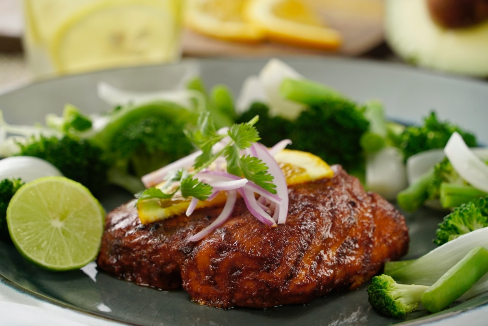

Pescado Adobado

Ingredientes:
| Ingrediente |
Cantidad |
| Aceite de oliva, para adobo |
2 Cucharadas |
| Dientes de ajo |
3 |
| Cebolla Blanca |
1/2 |
| Chile ancho |
6 |
| Chiles Morita |
5 |
| Chiles Guajillo |
2 |
| Jitomate |
1 |
| Oregano |
1 Cucharada |
|
Pimienta Gorda
|
1 Cucharada
|
Preparación:
♦ Para el adobo, calienta una sartén a fuego medio con el aceite de oliva, cocina el ajo, la cebolla, los chiles, el jitomate, el orégano, la pimienta gorda y el comino durante 10 minutos. Coloca los ingredientes en la licuadora y licúa durante 3 minutos con el jugo de naranja y el vinagre de piña, sazona ligeramente con sal y reserva.
♦ En un refractario marina el pescado con el adobo durante 1 hora.
♦ Calienta una parrilla o sartén a fuego alto y cocina el pescado durante 10 a 15 minutos dependiendo el grosor. Retira de la sartén y sirve con la naranja, la cebolla morada, el cilantro fresco acompaña con limón y verduras o arroz. Disfruta.